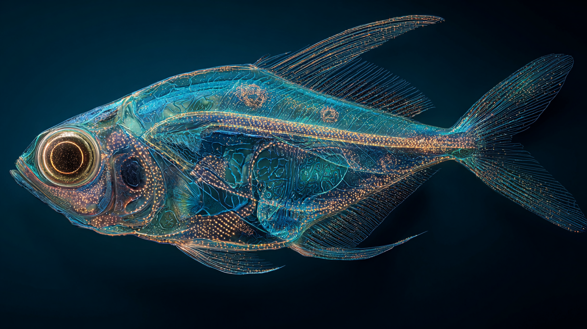

Publications scientifiques
Variabilité inattendue des signatures biologiques en environnement confiné
Analyse approfondie des fluctuations biologiques observées lors de missions d’isolement prolongé.
Lire la publication →
Effets cognitifs de la désynchronisation temporelle en mission longue
Étude des perturbations neurologiques liées aux cycles temporels artificiels prolongés.
Lire la publication →

Adaptation comportementale en environnement isolé extrême
Étude longitudinale dans des bases analogues simulant des missions extra-planétaires.
Lire la publication →Limites décisionnelles des systèmes autonomes en situation ambiguë
Analyse des comportements émergents de systèmes d’IA confrontés à des données contradictoires.
Lire la publication →Résilience microbienne en conditions extrêmes simulées
Étude des capacités d’adaptation microbienne face aux environnements hostiles prolongés.
Lire la publication →